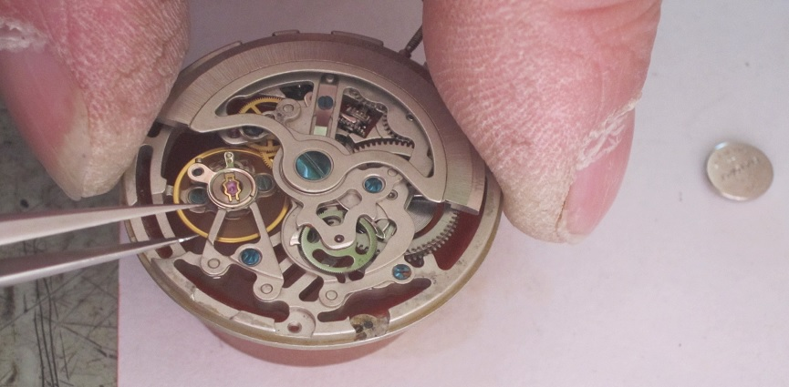
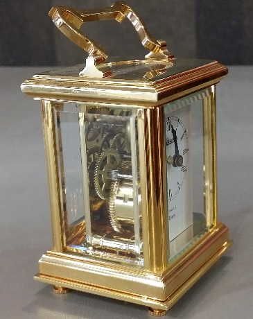

Grâce à un atelier sur place et à ses qualités de maître horloger et artisan bijoutier, Philippe Beauché vous propose ses services pour la réparation et la restauration de vos bijoux et de vos pièces d'horlogerie.
Services proposés sur place :
- Horlogerie :
- Changement de piles
- Changement de bracelet de montre
- Réparation de vos pièces d'horlogerie(montres, horloges, pendules...)
- Restauration de montres et pendules anciennes
- Bijouterie :
- Réparation des bijoux (colliers, chaines, bracelets, bagues, boucles d'oreilles...)
- Mise à taille
- gravure de médailles, gourmettes, anneaux, pièce d'orfeverie...
- Réenfilage de collier de perles
- Mais aussi :
- Perçage d'oreilles
- Devis gratuit
- Mise à taille de vos bijoux et montres offerte à l'achat
- Gravure offerte pour l'achat d'un couple d'alliances
